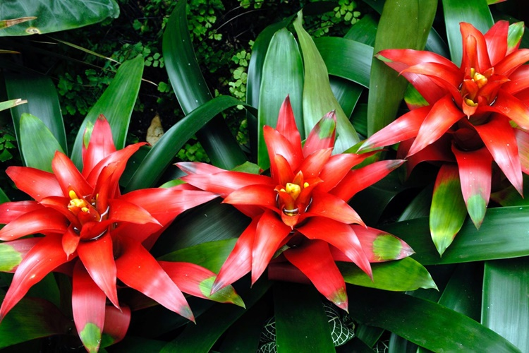
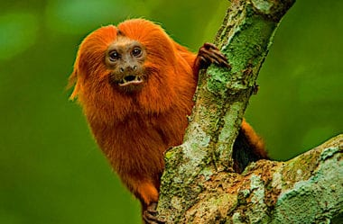
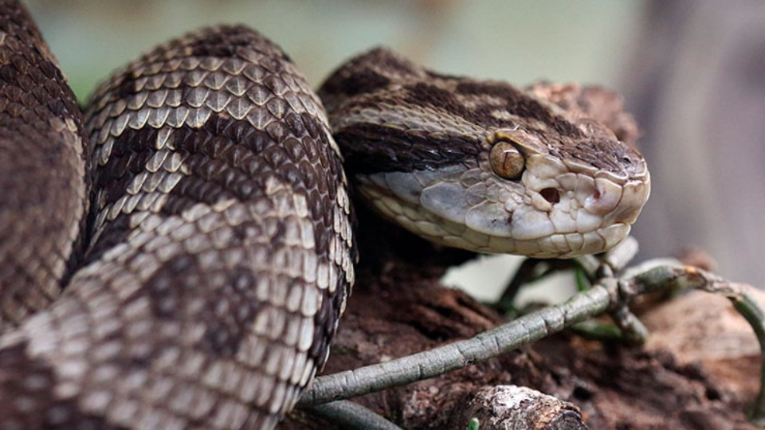
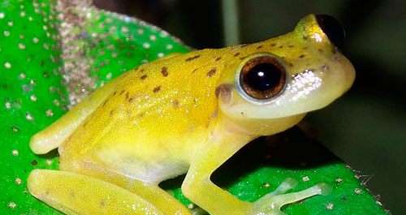
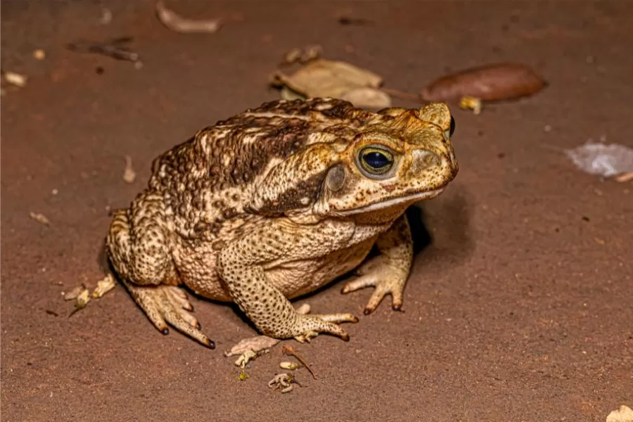

Resumo
- Localização: Estende-se da Bahia até o Rio Grande do Sul, acompanhando a costa brasileira.
- Extensão Original: Cobria cerca de 1,3 milhão de km² antes da exploração humana.
- Cobertura Atual: Restam aproximadamente 12% da cobertura original, o que equivale a cerca de 80 mil km².
- Biodiversidade:
Flora: Abriga cerca de 20 mil espécies de plantas, incluindo árvores, arbustos e epífitas.
Fauna: Lar de mais de 1.000 espécies de animais, incluindo mamíferos, aves, répteis e anfíbios. - Espécies Emblemáticas:
Flora: Pau-brasil, jequitibá, peroba, orquídeas.
Fauna: Mico-leão-dourado, jaguar, tamanduá-bandeira, arara-azul.
Localização
A Mata Atlântica inicia-se na Bahia, onde ocupa principalmente a região sul do estado, incluindo áreas
próximas à cidade de Ilhéus. Em seguida, se estende pelo Espírito Santo, cobrindo a maior parte do estado e
incluindo importantes áreas de preservação.
No Rio de Janeiro, a Mata Atlântica é predominante, especialmente nas regiões serranas, incluindo o famoso
Parque Nacional da Tijuca, que é uma das maiores florestas urbanas do mundo. Em São Paulo, o bioma ocupa
tanto áreas do litoral quanto partes do interior, com destaque para a Serra do Mar e a Serra da Mantiqueira,
onde estão localizados diversos parques estaduais e nacionais.
O estado do Paraná também abriga a Mata Atlântica, com áreas que se estendem pelo litoral e pelo interior,
destacando-se o Parque Nacional do Iguaçu, famoso por suas cataratas. Em Santa Catarina, o bioma cobre o
litoral e algumas regiões montanhosas, contribuindo para a biodiversidade local. Finalmente, no Rio Grande
do Sul, a Mata Atlântica é mais restrita, com presença concentrada na parte norte do estado.
Vegetação
A vegetação da Mata Atlântica é extremamente rica e diversa, composta por uma variedade de tipos de florestas, plantas e formações vegetais. Aqui estão algumas das principais características e tipos de vegetação que podem ser encontrados nesse bioma:
Dentre elas destacam-se: Açoita Cavalo Miúdo (Luehea divaricata) Araça Amarelo (Psidium cattleianum) Babosa Branca (Cordia superba) Café de Bugre (Cordia ecalyculata) Canafistula (Peltophorum dubium) Canela Amarela (Ocotea velutina) Canela Guaica (Ocotea puberula) Capixingui (Croton floribundus).
A Fauna da Floresta Amâzonica: Exemplos
Mamíferos
Mico-leão-dourado
Um primata pequeno e carismático, símbolo da conservação da Mata Atlântica. O mico-leão-dourado é conhecido por sua pelagem dourada e pela sua importância ecológica, já que desempenha um papel crucial na dispersão de sementes. Sua população tem se recuperado graças a programas de conservação.
Tatu-bola
Este pequeno mamífero é famoso por sua habilidade de se encolher em uma bola quando ameaçado. O tatu-bola é um símbolo da biodiversidade da Mata Atlântica, mas está ameaçado devido à destruição de seu habitat.

Aves
Arara-azul
Embora mais associada a outros biomas, algumas populações de arara-azul podem ser encontradas na Mata Atlântica. Essa espécie é conhecida por sua plumagem vibrante e pelo papel que desempenha na dispersão de sementes.

Tucano-de-Bico-de-Garrafa
Com seu bico grande e colorido, este tucano é um dos ícones da avifauna da Mata Atlântica. Além de sua beleza, o tucano é importante para o ecossistema, já que se alimenta de frutas e dispersa sementes.

Répteis
Cascavel
Esta serpente é conhecida por seu veneno potente e seu característico chocalho na cauda. Embora temida, a cascavel desempenha um papel crucial no controle das populações de roedores.
Lagarto-teiú
Um grande lagarto que habita a Mata Atlântica. Ele é onívoro e ajuda a controlar populações de insetos e pequenos vertebrados.

Anfíbios
Perereca-de-vidro
É uma rã fascinante que habita a Mata Atlântica e outras florestas tropicais da América Central e do Sul.Ela é notável por várias características distinta.
Sapo-cururu
Um sapo comum na Mata Atlântica que se adapta bem a ambientes alterados. Sua presença é importante para o controle de insetos, já que se alimenta de diversas espécies.
